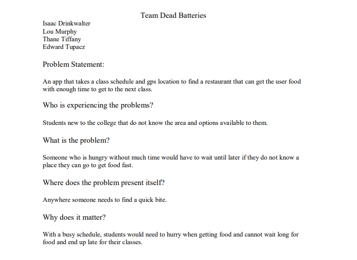
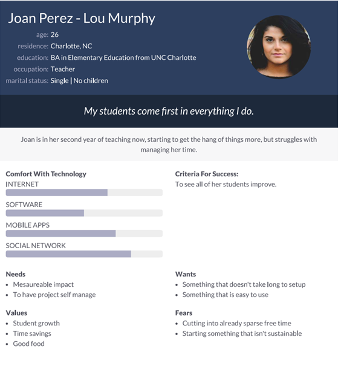

Problem Statement: Food GPS
An app that takes a class schedule and gps location to find a restaurant that can get the user food with enough time to get to the next class
Affinity Diagram: Food GPS

My group and I came up with different factors for our food GPS.
Personna: 3 Personnas for Food GPS
These are personnas for 3 typical Food GPS users.
Storyboard: Food GPS

These are the storyboards that my group made.
Sketches: Food GPS
These are the sketchess that me and my group made of how the app might look.
High Fidelity Prototype: Food GPS
My High Fidelity Prototype for Food GPS